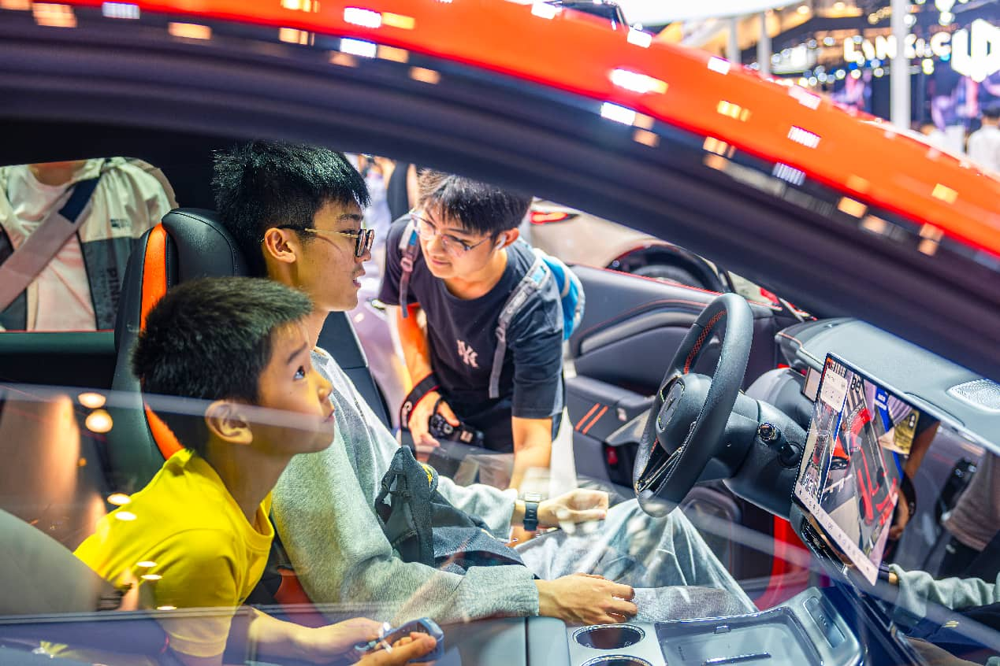
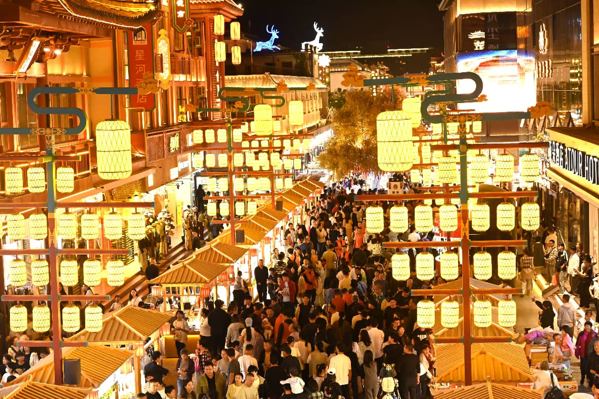
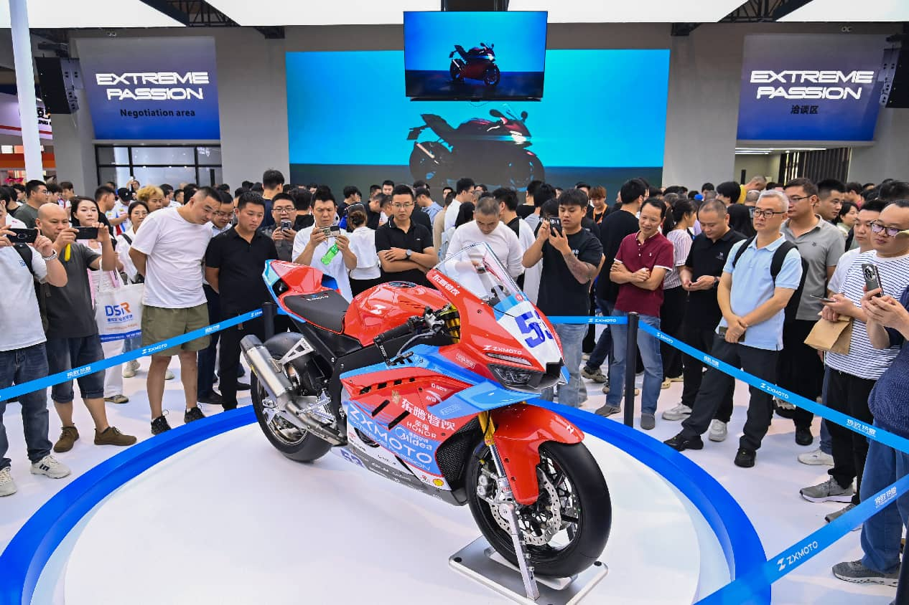

¿Qué distingue al mercado chino? Una sola palabra ofrece un punto de partida útil: estabilidad. Esta estabilidad se manifiesta, sobre todo, en la tranquila continuidad de la vida cotidiana. Dos comparaciones ayudan a entender por qué.
En primer lugar, el contraste con otras grandes economías. Mientras que en las principales economías desarrolladas la inflación ha aumentado considerablemente —con precios al alza y un coste de los productos básicos que ejerce una presión creciente sobre los presupuestos familiares—, los consumidores chinos han seguido disfrutando de bienes esenciales a precios relativamente asequibles. Los datos oficiales respaldan esta observación: en agosto, el índice de precios al consumo en China registró un incremento interanual del 0,8 %, un aumento moderado que pone de relieve el ritmo constante de la vida diaria de los ciudadanos.
En segundo lugar, la transición desde antiguas vulnerabilidades hacia la resiliencia actual. Hubo una época en la que los cortes de electricidad en verano y el cierre de fábricas eran motivo de gran preocupación. Hoy, el racionamiento eléctrico es algo excepcional. En agosto, el consumo total de electricidad en China superó, una vez más, el billón de kilovatios-hora, alcanzando una cifra récord. Sin embargo, las ciudades siguieron funcionando con normalidad y los hogares permanecieron iluminados, como de costumbre.
El valor de la estabilidad
Esta fiabilidad es fruto de una infraestructura energética modernizada y multidimensional. Desde corredores de transmisión de ultra-alto voltaje y redes de distribución rural hasta microrredes urbanas integradas, el sistema eléctrico chino combina, de manera fluida, la generación térmica convencional con fuentes eólicas, hidráulicas y solares. El resultado es una red resiliente que garantiza el desarrollo ininterrumpido de las actividades económicas y sociales.
En un mundo marcado por recuperaciones lentas, tensiones geopolíticas y una gran volatilidad en los precios de la energía, esta estabilidad posee un valor inmenso. Constituye un punto de referencia, poco común, que aporta previsibilidad.

Cabe destacar que el Fondo Monetario Internacional revisó recientemente a la baja su previsión de crecimiento mundial para este año —en 0,1 puntos porcentuales—, al tiempo que elevó su proyección de crecimiento para China en 0,2 puntos porcentuales. Esta divergencia refleja una creciente confianza en la resiliencia económica de China, lo que ayuda a explicar por qué los inversores internacionales están aumentando, de forma constante, sus compromisos de capital.
¿De dónde proviene esta estabilidad? Las fortalezas institucionales del sistema chino actúan como su ancla.
Un ejemplo de ello es el distrito de Dadukou, en el municipio de Chongqing, al suroeste de China. Conocido en el pasado por su extensa industria siderúrgica, el distrito se enfrentó a un desafío fundamental tras el traslado de la empresa Chongqing Iron & Steel Co., Ltd.: ¿cómo desarrollar nuevas industrias que sustituyeran a las anteriores? Aprovechando sus capacidades existentes, el distrito tomó la decisión estratégica de impulsar la industria de las motocicletas.
Trabajar de manera coordinada
El mercado y el gobierno han trabajado de forma coordinada. Gracias a la agilización de los trámites administrativos, el grupo Qianjiang Motorcycle pudo instalarse en sus nuevas instalaciones de fabricación inteligente tan pronto como concluyó su construcción. En la actualidad, los componentes suministrados por la empresa Qiutian Gear se emplean en una de cada cinco motocicletas fabricadas en todo el mundo, mientras que Lide Industry controla cerca de la mitad del mercado nacional chino de embragues.
Una planificación industrial sólida, un apoyo político específico y una mejora continua de los servicios han contribuido a establecer un ecosistema industrial bien integrado, accesible en un radio de 15 minutos dentro de la ciudad.

Equilibrar el dinamismo con el orden resulta fundamental. Con más de 350 empresas compitiendo en el mismo sector, ¿cómo puede el mercado mantenerse vibrante sin caer en el desorden? La clave reside en una estrecha coordinación a lo largo de la cadena industrial y en una competencia diferenciada.
Las empresas se especializan en nichos de mercado concretos, al tiempo que amplían y fortalecen la cadena industrial, fomentando una mayor integración entre la manufactura y el consumo, así como entre la industria y el turismo.
Un distrito identificado con las motos
Entre enero y agosto de este año, la producción industrial de las empresas —por encima de un determinado umbral de tamaño— en el sector de motocicletas de alta gama del distrito de Dadukou creció un 27 % interanual. La fabricación de motocicletas, su uso y la organización de eventos de deportes de motor se han convertido en parte de la identidad del distrito, lo que demuestra cómo es posible ofrecer al mercado espacio para prosperar garantizando, al mismo tiempo, una regulación eficaz.
«Combinar un mercado eficiente con un gobierno que funciona bien» no solo constituye una fortaleza distintiva de la economía de mercado socialista de China, sino también un principio clave para el desarrollo económico y social durante el periodo del XV Plan Quinquenal (2026-2030). Al seguir mejorando la gobernanza macroeconómica, modernizando las industrias tradicionales, expandiendo los sectores emergentes y planificando con antelación las industrias del futuro, China reforzará aún más la certidumbre y el atractivo singular de su mercado.

La estabilidad de la economía china no es estática; se trata de un equilibrio dinámico de alto nivel que se mantiene a medida que la economía sigue avanzando. Detrás de ello subyacen una determinación estratégica y un enfoque proactivo para configurar el futuro del país.
«No se trata de capital riesgo, sino de inversión industrial; no es una apuesta, sino un esfuerzo constante», señaló un funcionario de Hefei, en la provincia de Anhui (este de China), quien mantiene una visión lúcida a pesar de los elogios recibidos por la ciudad gracias al éxito de sus inversiones.
Los elevados rendimientos de la inversión industrial son solo los resultados visibles. Las fortalezas subyacentes residen en un enfoque más fundamental: adaptarse a las condiciones locales, tomar decisiones basadas en análisis sólidos y adoptar una perspectiva a largo plazo.
Innovar dentro de sectores específicos
En lugar de perseguir frenéticamente cada tendencia pasajera, China mantiene su enfoque en la innovación dentro de sectores específicos. En lugar de flaquear ante los vientos en contra, se mantiene firme en el objetivo de fomentar nuevas fuerzas productivas de calidad. En vez de centrarse únicamente en beneficios tangibles e inmediatos, dedica mayores esfuerzos a sentar las bases para obtener rendimientos a largo plazo.
Esta mentalidad serena, que equilibra la estabilidad estratégica con la agilidad táctica, encarna la visión del Partido Comunista de China sobre los logros políticos y el desarrollo. Surge de un sistema de gobernanza en constante evolución, se manifiesta en los incansables esfuerzos de cientos de millones de entidades de mercado y moldea, de manera silenciosa, las expectativas estables de la población respecto a la modernización china. Esta confianza en el camino elegido constituye el pilar fundamental del crecimiento económico sostenido y sólido de China.